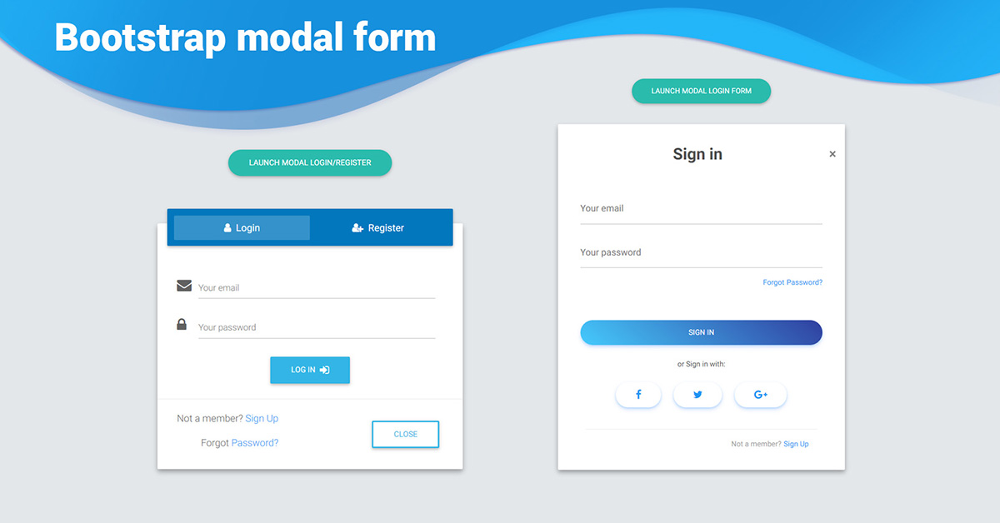
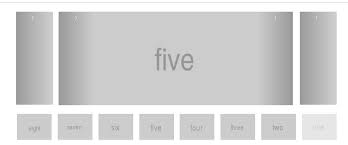

A Bootstrap egy nyílt forráskódú front-end keretrendszer, amely segítségével könnyen és hatékonyan készíthetünk reszponzív, mobilbarát weboldalakat és webalkalmazásokat. Tartalmaz előre definiált CSS és JavaScript komponenseket, amelyek lehetővé teszik a gyors és egyszerű fejlesztést. A keretrendszer tartalmaz sablonokat, gombokat, űrlapokat és egyéb interfész elemeket, valamint reszponzív keretrendszert a könnyű elrendezés és elrendezési módosítások érdekében.
A Bootstrap használata megkönnyíti a webfejlesztést, könnyen tanulható dokumentációja és előre definiált stílusosztályai vannak. A keretrendszer reszponzív tervezési lehetőségeket kínál, így a weboldalak és alkalmazások jól működnek különböző eszközökön. A Bootstrap folyamatosan frissül és a közösség által fejleszthetik, így naprakész az új trendekkel és technológiákkal. Széles körű támogatottsága és dokumentációja által könnyen található megoldás bármilyen fejlesztési kérdésre. Összességében a Bootstrap használata felgyorsítja a fejlesztési folyamatot és biztosítja a modern, reszponzív felhasználói élményt, ezért érdemes ezt a keretrendszert választani a webfejlesztés során.
A modális ablakok fontos részei a felhasználói felületeknek, amelyek lehetővé teszik a felhasználókkal való interakciót különböző tartalmak megjelenítése vagy műveletek végrehajtása céljából. Ezek az ablakok felugró felületeket hoznak létre, amelyek jól integrálhatók a Bootstrap keretrendszer más komponenseivel. A Bootstrap modális ablakai könnyen testreszabhatók és reszponzívak, így kiválóan alkalmasak különböző célú felhasználói interakciók megvalósítására a weboldalakon és webalkalmazásokban. 
A Bootstrap keretrendszer lehetővé teszi a könnyű integrációt és testreszabást a képcsúszka
komponens segítségével. Ez a funkció lehetővé teszi a felhasználóknak, hogy képeket vagy más
multimédiás tartalmakat jelenítsenek meg egy adott területen, amelyeket egyszerűen navigálhatnak
vagy átnézhetnek. A képcsúszka könnyen testreszabható az alkalmazás stílusához és igényeihez, és
lehetővé teszi a reszponzív elrendezését, hogy különböző eszközökön és kijelzőméreteken is
megfelelően működjön.
